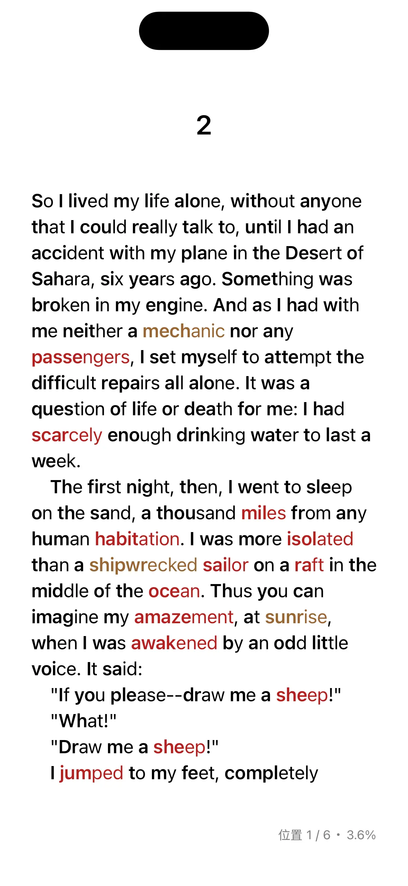
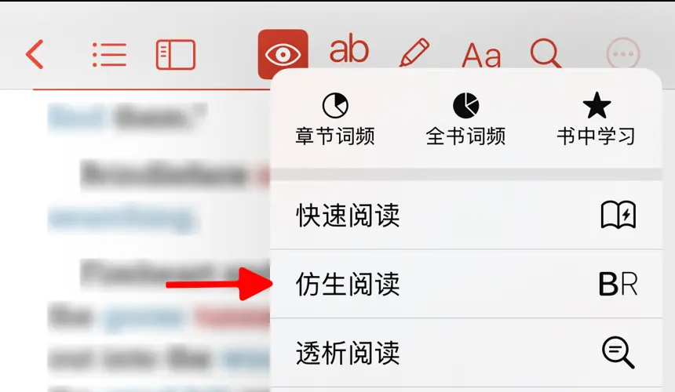

仿生阅读是听阅提供的一种旨在提升阅读效率和理解力的文字排版方法。它通过对文字的部分字体进行加粗处理（通常是单词的前几个字母），以引导读者的视线更快地捕捉关键信息，从而提高阅读速度和专注力。


仿生阅读的设计灵感来源于人类大脑在阅读时的模式识别能力。研究表明，我们在阅读时并不是逐字逐句地识别每个单词，而是依靠大脑快速捕捉单词的整体形状和前缀部分来进行理解。通过加粗单词的前几个字母，仿生阅读可以：
- 引导视线：加快读者对单词的识别速度。
- 减少眼动停留：降低眼睛在文字间移动的频率。
- 增强专注力：减少分心，尤其是在长文本阅读中。
使用限制
此功能仅支持文本格式的书籍，不支持PDF文件。
如何开启
按照以下步骤启用仿生阅读功能：
-
打开您想要阅读的电子书。
-
点击屏幕顶部菜单栏的 进入仿生阅读设置页面。如果顶部菜单栏没有此图标，请点按
 按钮，然后选择“仿生阅读”。
按钮，然后选择“仿生阅读”。 -
将开关滑动至“开启”状态，以激活仿生阅读功能。
选项说明
- 强度：指加粗字体在单词中的占比。听阅提供 5 个强度，对应占比为0.3，0.4，0.5，0.6和0.7。低强度适合熟练阅读者，只需少量提示即可帮助视线快速锁定单词。高强度适合注意力较难集中的用户，显著加粗的字母更易引导视线并提高专注力。
- 间隔：指加粗字母之间的间隔，可控制哪些单词会被加粗，哪些会保持原样。小间隔对内容记忆和语义跟踪的强化作用较明显。大间隔更接近自然阅读方式，不会让文本显得过于密集。
如何选择适合自己的设置？
- 高强度 + 小间隔：适合初次尝试仿生阅读，或者对文本内容理解需要特别专注的人。
- 低强度 + 大间隔：适合习惯快速阅读，或者对内容已经较为熟悉的人。
用户可根据具体阅读需求（如学习、休闲、工作）和个人习惯灵活调整参数，找到最舒适的阅读体验。